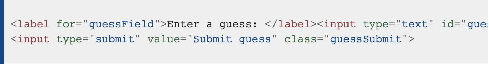

Due Date: Tuesday, 3/26/24
Overview
Alongside HTML and CSS, JavaScript is one of the three core technologies of the World Wide Web. It is used to make dynamic webpages interactive and provide online programs, including video games. The majority of websites employ it, and all modern web browsers support it by means of a built-in JavaScript engine.
JavaScript is more difficult to learn than other Web Fundamentals such as HTML and CSS, because it is truly a programming language, but your understanding of HTML and CSS will sure help.
Click on the link below and read the page. Work the example in replit, using index.html and, when asked to script.js
Challenge One - A Working Button
I'm adapting this lesson from mozilla. The original is here, if you want it.
JavaScript is a scripting or programming language that allows you to implement complex features on web pages — every time a web page does more than just sit there and display static information for you to look at — displaying timely content updates, interactive maps, animated 2D/3D graphics, scrolling video jukeboxes, etc. — you can bet that JavaScript is probably involved.
How do you add JavaScript to your page?
You can use internal or external scripts. Let's use an external script for this project.
External JavaScript
- Go to Project 12 in replit. The index.html file already has some starter code for you to edit, including the script element that works like a link to the "script.js" file.
- Use the script.js file that is already there in the repl.
- Type the following:
- This will have the script look for buttons on the page and, if it finds some, collect references to them into a list called “buttons.”
Now, let’s make a function that will run if a user clicks on a button. We want it to create a <p> element on the dynamic version of the web page that is being displayed.
Type this: This new p element is called para and we are putting some words inside it. Then we are making it a part of the dynamic version of the html document.
Put this new function at the very top of the script.js file, so Chrome will read it first.
Now to set it up so that function runs when the button is clicked.
Type this:
- Save your file and refresh the browser — now you should see that when you click the button, a new paragraph is generated and placed below.
Note: If your example doesn't seem to work, go through the steps again and check that you did everything right. Did you enter the JavaScript exactly as shown? JavaScript is case sensitive, and very fussy, so you need to enter the syntax exactly as shown, otherwise it may not work.
Make your own version
- Modify the html page so the button text says something other than "Click me.".
- Make it so that when you click this button, a heading appears underneath the button, as before, but have it say something other than "You clicked the button!."
- Please add at least one JS code comment to explain what is happening in your own words.
Note: This should be similar to the example code, just with some simple modifications and the reply put in your own words.
When you've done that, copy the index.html file to a new file, '1_1.html' and copy the javascript file to a new file, '1_1.js'.
Then delete the contents of index.html and script.js, to get ready for assignment 2.
After you complete both assignments, you will submit the repl.
Challenge Two - A Small Game
Now you've learned something about the theory of JavaScript and what you can do with it, we are going to give you an idea of what the process of creating a simple JavaScript program is like, by guiding you through a practical tutorial. Here you'll build up a simple "Guess the number" game, step by step.
We want to set really clear expectations here: You won't be expected to learn JavaScript by the end of this article, or even understand all the code we are asking you to write. Instead, we want to give you an idea of how JavaScript's features work together, and what writing JavaScript feels like.
Guess the number game
We'll show you how to build up a simple game. Play the game to get an understanding of how it works.
Let's imagine your boss has given you the following brief for creating this game:
Upon looking at this brief, the first thing we can do is to start breaking it down into simple tasks:
- Generate a random number between 1 and 100.
- Record the turn number the player is on. Start it on 1.
- Provide the player with a way to guess what the number is.
- Once a guess has been submitted, first record it somewhere so the user can see their previous guesses.
- Next, check whether it is the correct number.
- If it is correct:
- Display congratulations message.
- Stop the player from being able to enter more guesses (this would mess the game up).
- Display control allowing the player to restart the game.
- If it is wrong and the player has turns left:
- Tell the player they are wrong and whether their guess was too high or too low.
- Allow them to enter another guess.
- Increment the turn number by 1.
- If it is wrong and the player has no turns left:
- Tell the player it is game over.
- Stop the player from being able to enter more guesses (this would mess the game up).
- Display control allowing the player to restart the game.
- Once the game restarts, make sure the game logic and UI are completely reset, then go back to step 1.
Coding the game
Put a copy of the number-guessing-game-start.html file into yout index.html file in replit.
Run it. At the moment you'll see a simple heading, paragraph of instructions and a form for entering a guess, but the form won't currently do anything.
The place where we'll be adding all our code is inside a <script> element. Add this code at the bottom of the HTML (just before the body ending tag):
Adding variables to store our data
Let's get started. First of all, add the following lines inside your <script> element
:
This section of the code sets up the variables and constants we need to store the data our program will use. Variables are basically containers for values (such as numbers, or strings of text). You create a variable with the keyword let (or var) followed by a name for your variable. Constants are used to store values that are immutable or can't be changed and are created with the keyword const. In this case, we are using constants to store references to parts of our user interface; the text inside some of them might change, but the HTML elements referenced stay the same.
You can assign a value to your variable or constant with an equals sign (=) followed by the value you want to give it.
In our example:
- The first variable — randomNumber — is assigned a random number between 1 and 100, calculated using a mathematical algorithm.
- The first three constants are each made to store a reference to the results paragraphs in our HTML, and are used to insert values into the paragraphs later on in the code (note how they are inside a <div> element, which is itself used to select all three later on for resetting, when we restart the game):

(this is already in your index.html) - The next two constants store references to the form text input and submit button and are used to control submitting the guess later on.

(this is also already in your index.html) - Our final two variables store a guess count of 1 (used to keep track of how many guesses the player has had), and a reference to a reset button that doesn't exist yet (but will later).
Functions
Next, add the following below your previous JavaScript:
Functions are reusable blocks of code that you can write once and run again and again, saving the need to keep repeating code all the time. This is really useful. Here we have defined a function by using the keyword function, followed by a name, with parentheses put after it. After that we put two curly braces ({ }). Inside the curly braces goes all the code that we want to run whenever we call the function.
When we want to run the code, we type the name of the function followed by the parentheses.
Let's try that now. Run the code and display the page full-screen in the browser. Then use Ctrl-Shift-J to go into the console and enter the following line:
After pressing Enter, you should see an alert come up that says I am a placeholder; we have defined a function in our code that creates an alert whenever we call it.
Conditionals
I think it's safe to say that we don't want checkGuess() to just spit out a placeholder message. We want it to check whether a player's guess is correct or not, and respond appropriately.
At this point, replace your current checkGuess() function with this version instead:
This is a lot of code — phew! Let's go through each section and explain what it does.
- The first line (line 2 above) declares a variable called userGuess and sets its value to the current value entered inside the text field. We also run this value through the built-in Number() constructor, just to make sure the value is definitely a number.
- Next, we encounter our first conditional code block (lines 3–5 above). A conditional code block allows you to run code selectively, depending on whether a certain condition is true or not. It looks a bit like a function, but it isn't. The simplest form of conditional block starts with the keyword if, then some parentheses, then some curly braces. Inside the parentheses we include a test. If the test returns true, we run the code inside the curly braces. If not, we don't, and move on to the next bit of code. In this case the test is testing whether the guessCount variable is equal to 1 (i.e. whether this is the player's first go or not) (the === is JavaScript's operator for "equals.")
If it is, we make the guesses paragraph's text content equal to Previous guesses: . If not, we don't. - Line 6 appends the current userGuess value onto the end of the guesses paragraph, plus a blank space so there will be a space between each guess shown.
- The next block (lines 8–24 above) does a few checks:
- The first if(){ } checks whether the user's guess is equal to the randomNumber set at the top of our JavaScript. If it is, the player has guessed correctly and the game is won, so we show the player a congratulations message with a nice green color, clear the contents of the Low/High guess information box, and run a function called setGameOver(), which we'll discuss later.
- Now we've chained another test onto the end of the last one using an else if(){ } structure. This one checks whether this turn is the user's last turn. If it is, the program does the same thing as in the previous block, except with a game over message instead of a congratulations message.
- The final block chained onto the end of this code (the else { }) contains code that is only run if neither of the other two tests returns true (i.e. the player didn't guess right, but they have more guesses left). In this case we tell them they are wrong, then we perform another conditional test to check whether the guess was higher or lower than the answer, displaying a further message as appropriate to tell them higher or lower.
- The last three lines in the function (lines 26–28 above) get us ready for the next guess to be submitted. We add 1 to the guessCount variable so the player uses up their turn (++ is an incrementation operation — increment by 1), and empty the value out of the form text field and focus it again, ready for the next guess to be entered.
Events
At this point we have a nicely implemented checkGuess() function, but it won't do anything because we haven't called it yet. Ideally we want to call it when the "Submit guess" button is pressed, and to do this we need to use an event. Events are things that happen in the browser — a button being clicked, a page loading, a video playing, etc. — in response to which we can run blocks of code. The constructs that listen out for the event happening are called event listeners, and the blocks of code that run in response to the event firing are called event handlers.
Add the following line below your checkGuess() function:
Here we are adding an event listener to the guessSubmit button. This is a method that takes two input values (called arguments) — the type of event we are listening out for (in this case click) as a string, and the code we want to run when the event occurs (in this case the checkGuess() function). Note that we don't need to specify the parentheses when writing it inside addEventListener().
Try saving and refreshing your code now, and your example should work — to a point. The only problem now is that if you guess the correct answer or run out of guesses, the game will break because we've not yet defined the setGameOver() function that is supposed to be run once the game is over. Let's add our missing code now and complete the example functionality.
Finishing the game functionality
Let's add that setGameOver() function to the bottom of our code and then walk through it. Add this now, below the rest of your JavaScript:
- The first two lines disable the form text input and button by setting their disabled properties to true. This is necessary, because if we didn't, the user could submit more guesses after the game is over, which would mess things up.
- The next three lines generate a new <button> element, set its text label to "Start new game", and add it to the bottom of our existing HTML.
- The final line sets an event listener on our new button so that when it is clicked, a function called resetGame() is run.
Now we need to define this function too! Add the following code, again to the bottom of your JavaScript:
This rather long block of code completely resets everything to how it was at the start of the game, so the player can have another go. It:
- Puts the guessCount back down to 1.
- Empties all the text out of the information paragraphs. We select all paragraphs inside <div class="resultParas"></div>, then loop through each one, setting their textContent to '' (an empty string).
- Removes the reset button from our code.
- Enables the form elements, and empties and focuses the text field, ready for a new guess to be entered.
- Removes the background color from the lastResult paragraph.
- Generates a new random number so that you are not just guessing the same number again!
At this point you should have a fully working (simple) game — congratulations!
What to submit
- Please build the game according to the above instructions.
- Add some style to give it your own look and feel.
- Add several (at least 4) JS code comments to explain what is happening, in your own words.
Rubric
| Category | minus 15 points | minus 10 points | minus 5 points | Full points |
|---|---|---|---|---|
| Challenge One | Three of the six things at the right were done. | Four of the six things at the right were done. | Five of the six things at the right were done. | files 1_1.html and 1_1.js provide a button that says something other than "Click me!" and, when you click it, a heading appears underneath the button, but says something other than "You clicked the button!" At least one JS code comment is used. |
| Challenge Two | Some of the instructions were followed. | Most of the instructions were followed. | Nearly all of the instructions were followed. | files index.html and script.js provide a working guessing game, as described in the instructions. It has been uniquely styled. At least four JS code comments were used. |